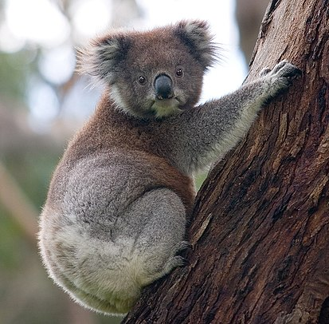

Коа́ла[1] (лат. Phascolarctos cinereus) — вид сумчатых, обитающий в Австралии. Единственный современный представитель семейства коаловых (Phascolarctidae) из отряда двурезцовых сумчатых (Diprotodontia)
Слово коала (англ. koala) происходит от даракского[en] слова gulawan или его укороченной формы gula. Первоначальную транскрипцию cullawine постепенно вытеснил вариант koola. Хотя гласная /u/ была первоначально написана в английской орфографии как «оо», она, возможно по ошибке, была изменена на «oa»[2]. Ошибочно считалось, что это слово означало «не пьёт»
Видовое название cinereus было предложено в 1817 году Георгом Августом Гольдфусом, и на латинском языке означает «пепельный»
Хотя коалы не являются медведями или их близкими родственниками, англоговорящие поселенцы конца XVIII века называли их медведями коала (англ. koala bear) из-за внешнего сходства. Это название до сих пор используется за пределами Австралии[5], хотя его использование не рекомендуется из-за двусмысленности
Естественный ареал коалы включает прибрежные районы на востоке и юге Австралии, от Аделаиды до южной части полуострова Кейп-Йорк. Также они распространены в регионах с достаточным количеством влаги для поддержки подходящих коалам лесов. Коалы штата Южная Австралия были в значительной степени уничтожены в течение первой половины XX века, но с помощью особей из штата Виктория популяция коал в Южной Австралии восстановлена. В начале XX века они были завезены в Янчепe в Западной Австралии[11], а также на ряд островов у побережья Квинсленда, в том числе острове Кенгуру и Магнитный остров, который предположительно является северной оконечностью современного ареала коал. Общая площадь ареала коал составляет около 1 000 000 км² и включает не менее 30 биогеографических регионов
Коалы остались незамеченными экспедицией Джеймса Кука, в 1770 году открывшей восточное побережье Австралии. Первое упоминание о них встречается в отчёте Джона Прайса, слуги губернатора Нового Южного Уэльса Джона Хантера, о путешествии в Голубые горы в 1798 году. Прайс пиcал, что в Голубых горах водится животное, называемое куллавайн, внешне похожее на ленивца[13]. Для науки коала был открыт в 1802 году флотским офицером Барралье, который обнаружил у аборигенов останки коалы и послал заспиртованные конечности зверя Филипу Кингу, губернатору Нового Южного Уэльса[14]. В июне 1803 года живой коала был пойман к югу от Сиднея, а 21 августа газета Sydney Gazette поместила его подробное описание[13]. В 1808 году коалы были определены как вид, схожий с вомбатами.
Примерно в течение полувека коал находили только в пределах Нового Южного Уэльса. В 1855 году натуралист Уильям Бландовски встретил его в штате Виктория, а в 1923 году О. Томас — в юго-восточной части Квинсленда[15].
В целом коалы похожи на вомбатов (их ближайших родственников)[11], но имеют более густой мех (мягкий и толщиной 2—3 см), более крупные уши и более длинные конечности. У коалы есть большие острые когти, помогающие ей с хождением по стволам деревьев. Вес коалы варьируется от примерно 5 кг у небольшой самки с севера до около 14 кг у крупного самца с юга.
Конечности коал приспособлены к лазанью. Кисть передней лапы имеет 2 отставленных в сторону «больших» пальца (по-английски: thumbs), имеющие две фаланги, которые противостоят трем остальным обычным пальцам (англ. fingers), с тремя фалангами, расположенными вдоль кисти. Называть второй палец коалы указательным не совсем корректно, ибо он выглядит так же, как и первый, то есть «большой» палец. Все пальцы передних лап завершаются прочными когтями. Всё это позволяет животному эффективно обхватывать ветви деревьев, замыкая кисть в надёжный замок, а молодому коале цепко держаться за шерсть матери[16]. При этом напомним, что коала и спит в таком положении, а при случае может и повисеть на одной лапе.
Что касается задних конечностей, то на ступне всего один «большой» палец, причём он без когтя, и четыре обычных, завершающихся когтями. При этом второй, то есть указательный палец в области 1-й и 2-й фаланги сросся мягкими тканями со средним пальцем ступни.
Коалы — одни из немногих млекопитающих, за исключением приматов, имеющих папиллярный узор на подушечках пальцев. Отпечатки пальцев коал похожи на отпечатки пальцев людей, и их сложно различить даже с помощью электронного микроскопа[17][18].
Коалы обычно молчаливы, но самцы могут подавать очень громкий призывный крик, который в период размножения можно услышать на расстоянии в почти километр[23]. Способность коал издавать звук большой громкости и низкой частоты, нехарактерный для некрупного животного, учёные объясняют наличием дополнительной пары голосовых связок, расположенных за гортанью[24]. Самки выбирают себе партнеров в зависимости от этих призывных криков, отдавая при этом предпочтение более крупным самцам[25]. Когда коала испуган или ранен, он может издавать громкий крик, похожий на крик ребёнка[26].
Коалы населяют эвкалиптовые леса, почти всю жизнь проводят в кронах этих деревьев. Днём коала спит, устроившись на ветке или в развилках ветвей; ночью лазает по деревьям, отыскивая корм. Даже если коала не спит, он обычно часами сидит совершенно неподвижно, обхватив ветку или ствол дерева передними лапами. Коала неподвижен 16—18 часов в сутки. По земле он передвигается не очень хорошо и потому спускается вниз только для перехода на новое дерево, до которого не может допрыгнуть. Прыгают коалы с дерева на дерево на удивление ловко и уверенно; спасаясь бегством, эти обычно медлительные и флегматичные звери переходят на энергичный галоп и быстро взбираются на ближайшее дерево. Умеют плавать.
Самки коал ведут одиночный образ жизни и придерживаются своих участков, которые крайне редко покидают. В плодородных областях участки отдельных особей зачастую перекрывают друг друга. Самцы не территориальные, но ещё менее общительны — при встрече, особенно в период размножения, они часто нападают друг на друга, нанося увечья.
Только в период размножения, который продолжается с октября по февраль, коалы собираются группами, состоящими из взрослого самца и нескольких самок. В это время самцы часто трутся грудью о деревья, оставляя пахучие метки, и издают громкие призывные крики, порой слышимые за километр. Поскольку самцов рождается меньше, чем самок, вокруг самцов коал в брачный сезон собираются гаремы из 2—5 самок. Спаривание происходит на дереве.
Коала относится к одному из базальных семейств сумчатых, родственному вомбатовым. Семейство Phascolarctidae достигало наибольшего многообразия в олигоцене, 34—24 млн лет назад, когда, судя по ископаемым останкам, насчитывалось не менее 18 видов сумчатых медведей. Среди них имелся такой гигант, как квинслендский коала Koalemus, который был в 28 раз больше современных коал[27]. Современный коала Phascolarctos cinereus, предположительно, появился 15 млн лет назад, после вымирания более мелких и менее специализированных видов.
